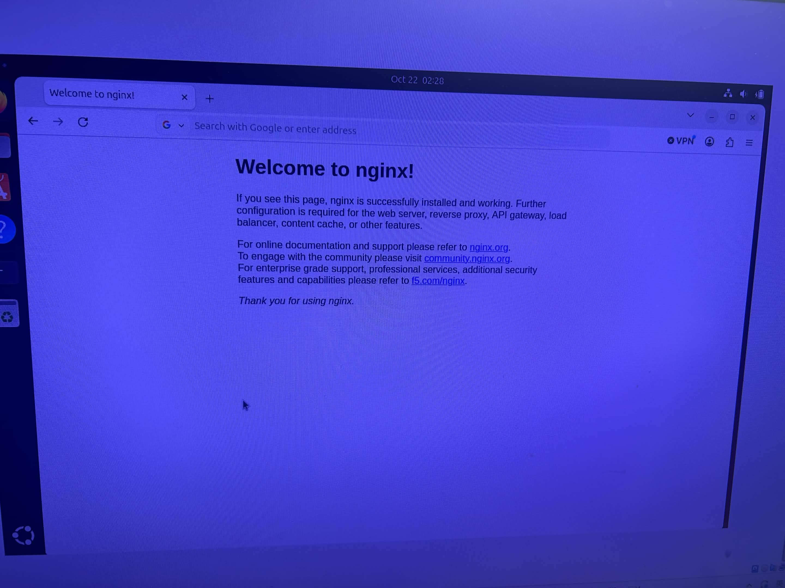
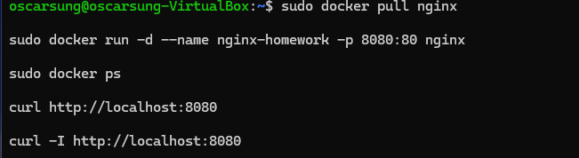

問題1
它是真的root但只在docker的權限裡，並不代表可以存取整台主機
問題2


步驟
下載 Nginx Image：sudo docker pull nginx
建立並啟動 Nginx Container：
sudo docker run -d --name nginx-homework -p 8080:80 nginx
使用 curl 或瀏覽器連線：
curl http://localhost:8080
curl -I http://localhost:8080
Why
因為 Docker 可以直接使用 Nginx 映像檔建立容器，不需要另外安裝 Nginx。透過 -p 8080:80，把電腦的 8080 埠連接到容器的 80 埠，所以我們就能透過瀏覽器看到 Nginx 的網頁，代表容器已經成功運作。